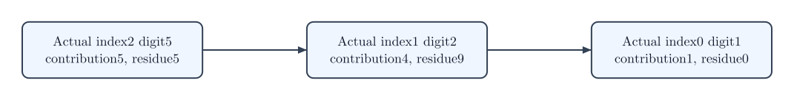
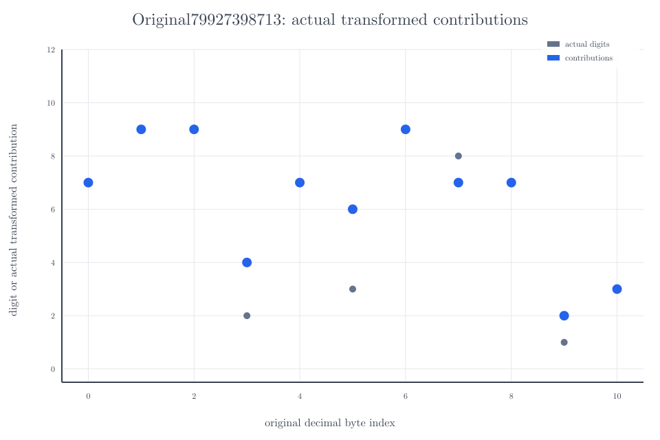
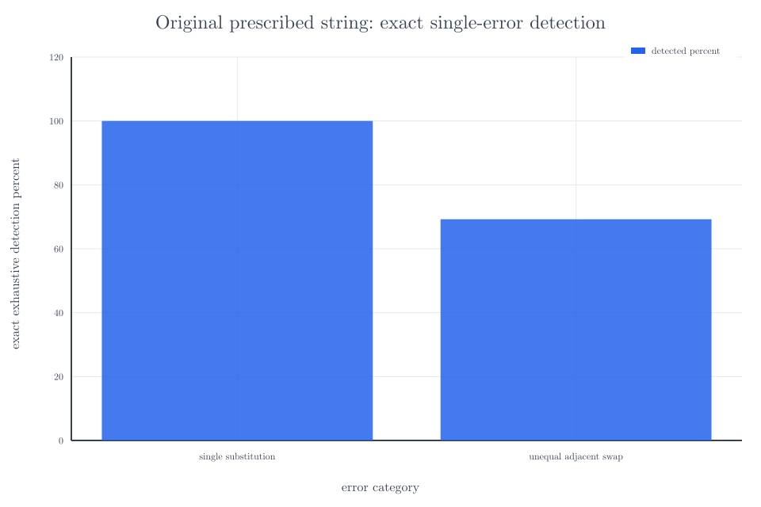
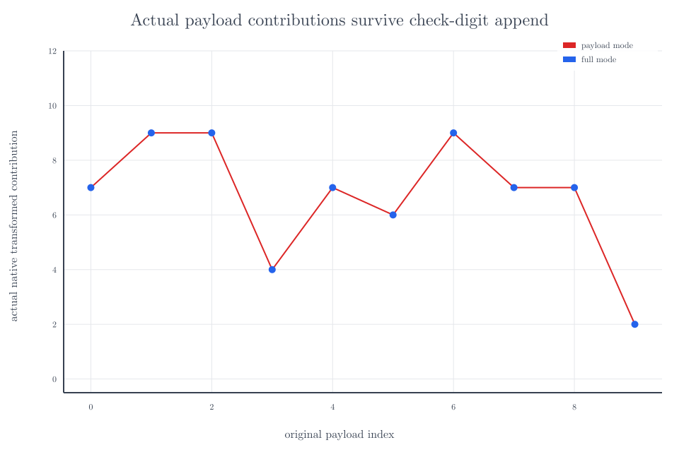

The Luhn decimal check digit
Abstract
Luhn appends a decimal digit so an alternating weighted digit sum is zero modulo ten. We retain the original7992739871 example and exhaustive single-error study, expose the actual right-to-left transformations, and derive why all single substitutions are caught while09/90 adjacent swaps can be missed.
Tiny hand calculation: append five to twelve
Define t(d)=2*d for d<5 and2*d−9 otherwise. In a full string the rightmost digit has weight one, its predecessor uses t, and the choices alternate moving left. For a payload awaiting its appended check digit, its own rightmost digit must use t: appending the new weight-one digit leaves those payload transformations unchanged.
For payload12, its contributions are1 and4, sum5, so the appended digit is5. The full string125 has contributions1,4,5 and weighted residue zero. The actual capture visits indices2,1,0; the diagram uses those actual committed residues and contributions. It does not repeat the checksum in the report.
#include <dm/dm.hpp>
int main() {
std::filesystem::create_directories("build");
auto t = dm::algorithms::luhn_trace("125");
std::print("| actual original index | actual digit | double | actual raw value | subtract nine | actual " "contribution | prior residue | actual next residue |\n| ---: | ---: | --- | ---: | --- | " "---: | ---: | ---: |\n");
for (auto &s : t.steps)
std::print("| {} | {} | {} | {} | {} | {} | {} | {} |\n", s.index,
s.digit, s.doubled, s.raw, s.reduced, s.contribution,
s.before, s.after);
dm::graphics::Diagram d;
for (std::size_t i = 0; i < t.steps.size(); ++i) {
auto &s = t.steps[i];
d.node(std::to_string(i), {6. * i, 0},
std::format("Actual index{} digit{}\ncontribution{}, residue{}",
s.index, s.digit, s.contribution, s.after));
if (i)
d.edge(std::to_string(i - 1), std::to_string(i));
}
d.save_svg("build/luhn_tiny.svg");
}| actual original index | actual digit | double | actual raw value | subtract nine | actual contribution | prior residue | actual next residue |
|---|---|---|---|---|---|---|---|
| 2 | 5 | false | 5 | false | 5 | 0 | 5 |
| 1 | 2 | true | 4 | false | 4 | 5 | 9 |
| 0 | 1 | false | 1 | false | 1 | 9 | 0 |

Original payload and full-number example
Retain payload7992739871 and full string79927398713. The native payload result returns check digit3; the full-mode trace validates the appended string and exposes every actual transformed contribution. The original79927398710 checksum failure is retained separately. Leading zeros are never dropped by integer parsing because the API consumes the exact decimal byte string.
Only residue modulo ten is required, so every producing update stores(before+contribution)%10 with both terms bounded by nine. This avoids the old unbounded signed-int sum for very long strings without changing any well-formed nonempty checksum decision. Input validation checks every byte before the first arithmetic step.
#include <dm/dm.hpp>
int main() {
std::filesystem::create_directories("build");
auto payload =
dm::algorithms::luhn_analyze("7992739871",
dm::algorithms::LuhnMode::Payload);
auto t = dm::algorithms::luhn_trace("79927398713");
std::print("Actual generated digit {}; actual full validity {}; actual altered check-digit validity " "{}.\n\n| actual original index | actual digit | actual contribution | doubled | actual " "residue after this right-to-left step |\n| ---: | ---: | ---: | --- | ---: |\n",
payload.check_digit, t.analysis.valid,
dm::algorithms::luhn_validate("79927398710"));
std::vector<double> x, y, z;
for (auto &s : t.steps) {
std::print("| {} | {} | {} | {} | {} |\n", s.index, s.digit,
s.contribution, s.doubled, s.after);
x.push_back(s.index);
y.push_back(s.digit);
z.push_back(s.contribution);
}
auto p = dm::graphics::RPlot::create();
p.points(x, y, "actual digits", {100, 116, 139}, 5).points(x, z,
"contributions",
{37, 99, 235}, 7).y_limits(-.5, 12).title("Original79927398713: actual transformed contributions").x_label("original decimal byte index").y_label("digit or actual transformed contribution").save_svg("build/luhn_original.svg");
}Actual generated digit 3; actual full validity true; actual altered check-digit validity false.
| actual original index | actual digit | actual contribution | doubled | actual residue after this right-to-left step |
|---|---|---|---|---|
| 10 | 3 | 3 | false | 3 |
| 9 | 1 | 2 | true | 5 |
| 8 | 7 | 7 | false | 2 |
| 7 | 8 | 7 | true | 9 |
| 6 | 9 | 9 | false | 8 |
| 5 | 3 | 6 | true | 4 |
| 4 | 7 | 7 | false | 1 |
| 3 | 2 | 4 | true | 5 |
| 2 | 9 | 9 | false | 4 |
| 1 | 9 | 9 | true | 3 |
| 0 | 7 | 7 | false | 0 |

Why single substitutions are detected, and the blind adjacent pair
At either parity, the digit-to-contribution map is a permutation modulo ten: identity maps0..9 to0..9, and t maps them to0,2,4,6,8,1,3,5,7,9. Replacing one digit by a distinct digit changes its contribution by a nonzero residue, so every single substitution is detected, including a changed check digit.
For adjacent digits a,b with opposite parities, swapping them changes the weighted sum by[t(a)−a]−[t(b)−b], up to sign. The ten values of t(d)−d modulo ten are0,1,2,3,4,6,7,8,9,0. Only0 and9 share a value, so distinct adjacent transpositions are detected except09/90. Equal adjacent digits are unchanged strings, not errors, and the exhaustive study excludes them.
Retain the original payload1230904560907, append its native generated digit, then let the native study construct and independently check all9*n single substitutions and each distinct adjacent swap. The reported rates are exact exhaustive counts for this prescribed string, not population error probabilities. The table below preserves every actual missed case.
#include <dm/dm.hpp>
int main() {
std::filesystem::create_directories("build");
auto s = dm::algorithms::luhn_error_study("1230904560907");
std::print("Actual complete original string {}.\n\n| actual error category | actual generated errors | " "actual detected | exact detected fraction |\n| --- | ---: | ---: | ---: |\n| substitution | " "{} | {} | {} |\n| distinct adjacent swap | {} | {} | {} |\n\n| actual missed " "kind0:substitution,1:swap | actual changed index | actual changed string | actual residue " "|\n| ---: | ---: | --- | ---: |\n",
s.full, s.substitutions, s.substitutions_detected,
double(s.substitutions_detected) / s.substitutions, s.swaps,
s.swaps_detected, double(s.swaps_detected) / s.swaps);
for (auto &e : s.cases)
if (!e.detected)
std::print("| {} | {} | {} | {} |\n", int(e.kind), e.index,
e.changed, e.remainder);
auto p =
dm::graphics::RPlot::barplot({100. * s.substitutions_detected /
s.substitutions,
100. * s.swaps_detected / s.swaps},
{"single substitution",
"unequal adjacent swap"},
"detected percent", {37, 99, 235});
p.x_label("error category").y_label("exact exhaustive detection percent");
p.title("Original prescribed string: exact single-error detection").y_limits(0, 120).save_svg("build/luhn_detection.svg");
}Actual complete original string 12309045609071.
| actual error category | actual generated errors | actual detected | exact detected fraction |
|---|---|---|---|
| substitution | 126 | 126 | 1 |
| distinct adjacent swap | 13 | 9 | 0.6923076923076923 |
| actual missed kind0:substitution,1:swap | actual changed index | actual changed string | actual residue |
|---|---|---|---|
| 1 | 3 | 12390045609071 | 0 |
| 1 | 4 | 12300945609071 | 0 |
| 1 | 9 | 12309045690071 | 0 |
| 1 | 10 | 12309045600971 | 0 |

Payload parity, empty strings and decimal validation
The payload mode and full mode have different rightmost parity, but appending the generated check digit makes each original payload position retain precisely its payload-mode transformation. The next figure/table compare the actual native traces at matching original indices; the extra final check digit is represented separately. This is a direct parity check, not an alternative checksum implementation.
Inputs are ASCII decimal bytes only, including leading zeros. Signs, separators, NULs, arbitrary high bytes and non-ASCII numerals throw invalid_argument after complete validation; they are not silently stripped or treated as digits. Empty payload is explicitly permitted and generates digit zero, so the nonempty full string0 has residue zero. Empty full input now returns false rather than the earlier accidental zero-sum true. A well-formed checksum failure returns false. Checksum validity alone supplies no issued-identifier length/prefix/business validation.
Ordinary checksum evaluation uses O(n) time and constant auxiliary storage. A complete trace admits2*n logical original bytes and digit records before copies, with default million cap and zero disabling only the optional cap. It excludes fields, capacities, analysis/runtime copies and physical byte size. The exhaustive error study owns every changed string and performs O(n*n) checksum work/output bytes for full length n; its separate complete logical quota counts payload/full bytes plus each error record and its changed bytes before error copies. Captures own their strings and do not replay earlier prefixes.
#include <dm/dm.hpp>
int main() {
std::filesystem::create_directories("build");
const std::string payload = "7992739871";
auto a =
dm::algorithms::luhn_trace(payload, dm::algorithms::LuhnMode::Payload);
const auto full = payload + char('0' + a.analysis.check_digit);
auto b = dm::algorithms::luhn_trace(full);
std::vector<double> x, y, z;
std::print("| original payload index | actual payload contribution | actual full contribution at same " "index | actual equality |\n| ---: | ---: | ---: | --- |\n");
for (auto &s : a.steps) {
const auto &other = b.steps[b.steps.size() - 1 - s.index];
std::print("| {} | {} | {} | {} |\n", s.index, s.contribution,
other.contribution, s.contribution == other.contribution);
x.push_back(s.index);
y.push_back(s.contribution);
z.push_back(other.contribution);
}
std::print("\nActual empty payload digit {}; empty full validity {}; leading-zero full validity {}; " "appended check digit {}.\n",
dm::algorithms::luhn_check_digit(""),
dm::algorithms::luhn_validate(""),
dm::algorithms::luhn_validate("0000"), a.analysis.check_digit);
auto p = dm::graphics::RPlot::create();
p.line(x, y, "payload mode", {220, 38, 38}, 2).points(x, z, "full mode",
{37, 99, 235}, 5).y_limits(-.5, 12).title("Actual payload contributions survive check-digit append").x_label("original payload index").y_label("actual native transformed contribution").save_svg("build/luhn_parity.svg");
}| original payload index | actual payload contribution | actual full contribution at same index | actual equality |
|---|---|---|---|
| 9 | 2 | 2 | true |
| 8 | 7 | 7 | true |
| 7 | 7 | 7 | true |
| 6 | 9 | 9 | true |
| 5 | 6 | 6 | true |
| 4 | 7 | 7 | true |
| 3 | 4 | 4 | true |
| 2 | 9 | 9 | true |
| 1 | 9 | 9 | true |
| 0 | 7 | 7 | true |
Actual empty payload digit 0; empty full validity false; leading-zero full validity true; appended check digit 3.

Verification and references
Native tests exhaust all11111 decimal words through length four against an
independent left-to-right reference, verify every real right-to-left
transformation and bounded residue, retain original examples and exact error
counts, and check the09/90-only unequal-adjacent blind spot across100 payload
studies. Empty/full parity, leading zeros, complete malformed-byte/mode guards,
long-input bounded residues, complete quotas and ownership are covered. The
ten-report batch passes 95 CTest cases, 30 directly instrumented ASan/UBSan
cases, 121 compiled and executed public examples, 601/601 scoped documentation
definitions and 11 representative hovers. Independent integer, Fraction, graph,
string and NumPy references verify 82,729 records, including the complete
original seeded LSH study. Frozen comparisons preserve ordinary legacy results;
malformed-input, sentinel-collision, ownership and explicit-budget corrections
are documented above. Thirteen checkout headers and thirteen installed headers
compile independently, and an installed-header native consumer links and runs.
Each complete report program runs against the checkout library; all four native
figures are reviewed and HTML/Markdown exports preserve computed results and
image bytes. Batch receipts: build/mepml-conversion/batch-214-223/.
H. P. Luhn, Computer for Verifying Numbers, United States patent2,950,048, filed6 January1954 and issued23 August1960, describes decimal check-digit generation and verification. The modular derivation here explains the implemented substitution/transposition behavior; it does not claim all multiple-error combinations are detected.